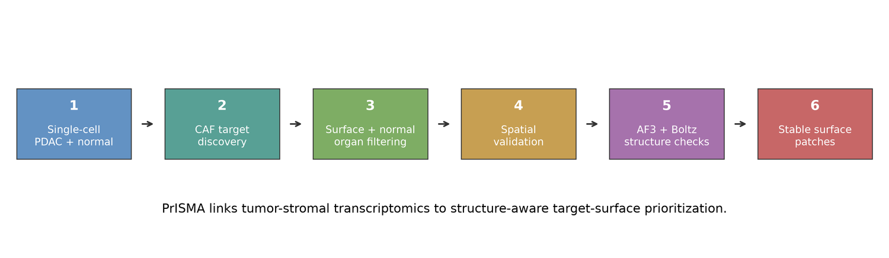
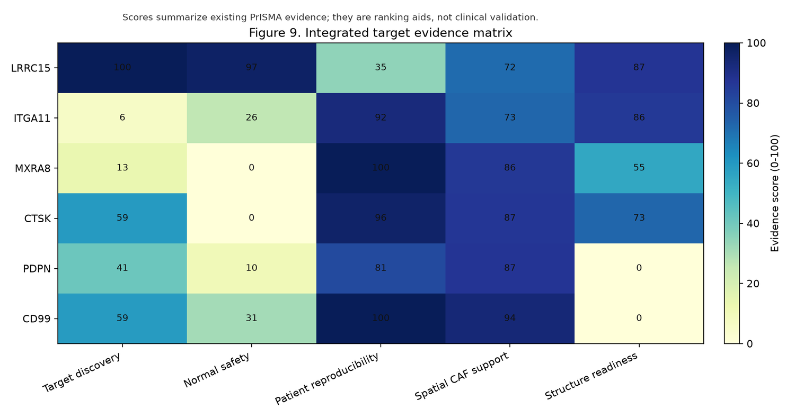
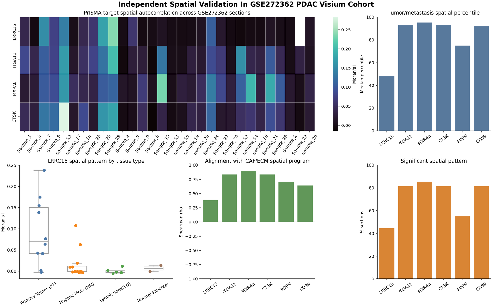
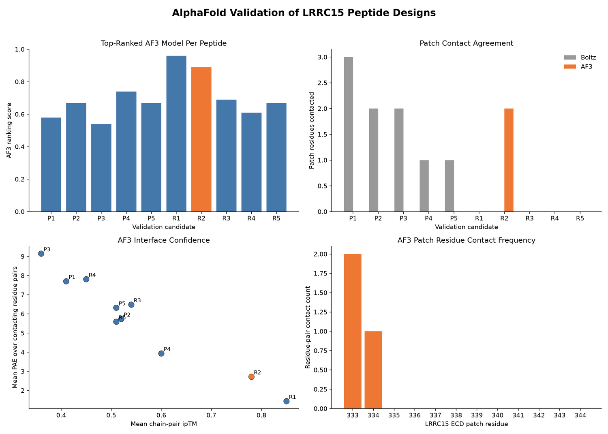
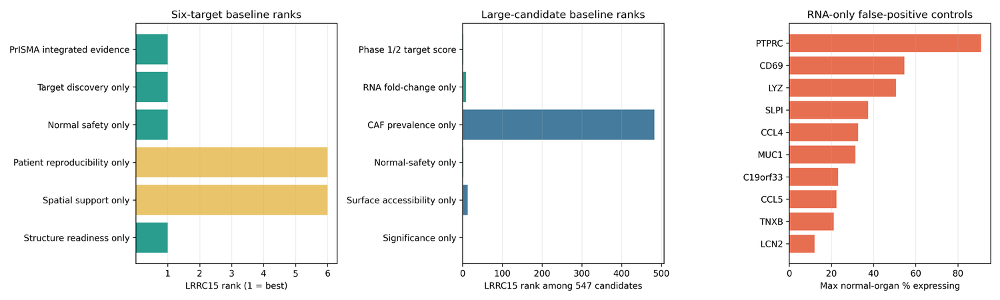
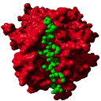

PrISMA-RSC
Pancreatic immunotherapy target prioritization with specificity-aware consensus.
PrISMA-RSC stands for Pancreatic Immunotherapy Screening and Microenvironment Atlas with Robust Specificity-Aware Consensus. It is a computational framework for ranking stromal immunotherapy targets in pancreatic cancer while penalizing nonspecific or risky candidates.
The core idea is that target discovery should not stop at high gene expression. A useful target also needs tumor-stromal relevance, normal tissue safety, spatial support, protein-level plausibility, structure readiness, and off-target specificity checks before it becomes worth experimental follow-up.
PDAC stroma
LRRC15 benchmark
specificity
spatial context
structure-aware checks
negative controls
protein modeling
AlphaFold
Boltz
stromal immunotherapy
target discovery
target specificity
structural bioinformatics
cancer microenvironment
translational biotech
consensus ranking
protein modeling
AlphaFold
Boltz
stromal immunotherapy
target discovery
target specificity
structural bioinformatics
cancer microenvironment
translational biotech
consensus ranking
What it does
A target ranking engine built for specificity, not just expression.
Score tumor-stromal relevance
Starts from PDAC stromal candidates and asks whether a target is enriched in cancer-associated fibroblast-like populations.
Penalize normal tissue risk
Uses specificity-aware logic to reduce false-positive targets that may look strong in tumors but are unsafe elsewhere.
Add spatial and structure evidence
Integrates spatial validation and structure-aware triage to separate plausible targets from weak biomarkers.
Stress-test the ranking
Runs ablation, negative-control, and weight-perturbation checks so the ranking is not dependent on one fragile setting.
Separate target discovery from binder claims
Treats LRRC15 target prioritization and LRRC15 binder triage as different tasks with different evidence standards.
Cross-screen off-target context
Compares designed candidates against LRRC15 and off-target proteins such as ITGA11, MXRA8, and CTSK before calling anything promising.
Why it matters
Target prioritization should survive reviewer skepticism.
Many target-ranking pipelines can surface genes that are highly expressed, but that is not enough for therapeutic relevance. PrISMA-RSC is designed around a stricter question: which candidates remain strong after specificity, spatial context, structure, and negative controls?
Integrated evidence
Combines target discovery, normal safety, patient reproducibility, spatial CAF support, structure readiness, and actionability.
Benchmark recovery
Checks whether the scoring logic recovers LRRC15 without pretending LRRC15 itself is a newly discovered biological target.
Robustness testing
Weight perturbation and noisy-layer analyses test whether the top target changes when scoring assumptions move.
Honest caveat
The ROC-style benchmark is a small target-ranking diagnostic, not a patient-level clinical model validation.
What it found
LRRC15 became the benchmark lead because it survived multiple filters, not because one layer looked good.
The PrISMA-RSC paper frames LRRC15 as a known stromal target used to test whether the pipeline can recover plausible biology while rejecting weaker or riskier candidates. That distinction matters: the project is most original as an auditable ranking and triage system, not as a claim that LRRC15 was newly discovered.
Target signal
LRRC15 showed 5.49 log2 fold-change in PDAC CAF-like cells versus human normal pancreas stroma, with low normal-organ risk.
Spatial support
The target was detected in 10 of 11 PDAC spatial slides, supporting relevance to tumor microenvironment regions.
Consensus rank
PrISMA-RSC ranked LRRC15 first with score 82.6, ahead of ITGA11 at 44.5 and CTSK at 44.2.
Stress tests
LRRC15 was top-ranked in 72.5% of 20,000 random layer-weight scenarios and stayed top-ranked under 10,000 layer-score noise trials.
Binder triage
The binder stage is deliberately conservative.
PrISMA-RSC also explores computational binder screening, but the page avoids overclaiming. Protein-structure and binding models are hypothesis generators. A positive computational margin is a reason to design experiments, not evidence of a working therapeutic.
Crop-level screen
A 1,000-design crop-level campaign produced 44 high-confidence LRRC15 crop candidates, but the top candidates did not retain full-ECD specificity.
Full-context follow-up
A 450-design full-ECD exploration recovered four positive-margin candidates, with the best margin reported as 0.089 over the strongest off-target.
Off-target logic
Candidate binders were screened against comparator contexts including ITGA11, MXRA8, and CTSK to avoid single-target tunnel vision.
Real-world boundary
The result is a reproducible starting point for wet-lab testing, not a validated binder, drug, or clinical treatment.
Figures
Selected visual evidence from the PrISMA-RSC package.





Tools and data resources
The technical stack behind PrISMA-RSC.
PrISMA-RSC connects single-cell and spatial resources with structure prediction, target scoring, off-target screening, and immunogenicity or developability triage.
 Python
Python
Pipeline scripting, scoring, ranking, and figure generation.
 Scanpy
Scanpy
Single-cell analysis workflow for expression and cell-state comparisons.
Single-cell ecosystem and Biohub-style cross-validation context.
Normal-tissue expression reference for specificity risk.
Normal human cell atlas context for tissue and cell-type filtering.
Proteogenomic support for RNA, protein, and glycopeptide evidence.
 AlphaFold
AlphaFold
Structure prediction and cross-model structural interpretation.
Structure and binding-confidence checks for target/binder triage.
Known structural references and sanity checks for modeled proteins.

MHCflurryHLA-I binding prediction used as an immunogenicity proxy.
Public manuscript status
Draft available by request, not publicly posted yet.
Because PrISMA-RSC is being prepared for conference submission, I am keeping the full manuscript off the public site until acceptance or a formal preprint. The public page shows the project, figures, and contact path without exposing a draft Google Drive link.